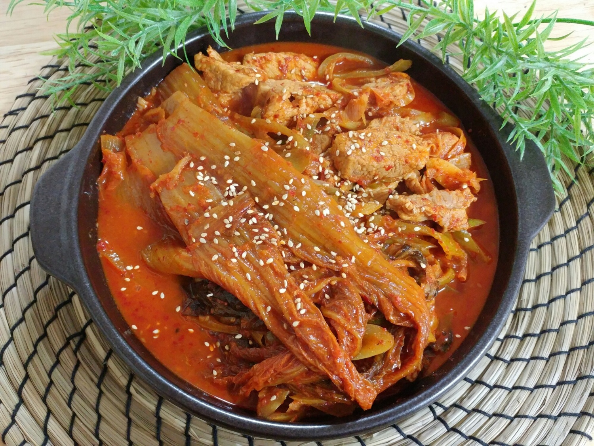

Kimchi Pot Roast

Description
This is an old favorite that uses the staple food of Korea: kimchi.
It's super easy to make and super delicious.
Ingredients
- Well-fermented kimchi that's too sour to eat on its own
- Onion
- Garlic
- Pork meat (belly is best)
- Soy sauce
- Korean red pepper flakes
- Honey
- Salt
- Black pepper
Steps
- Chop up everything except for kimchi and stuff it all into a pot.
- Add some of that dank kimchi water.
- Turn on heat, bring it to a boil for five minutes, then simmer on low heat for one hour.
- Eat